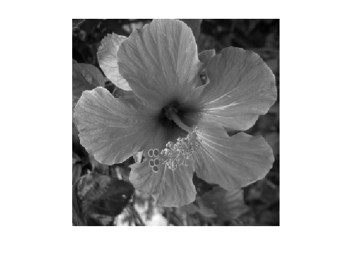
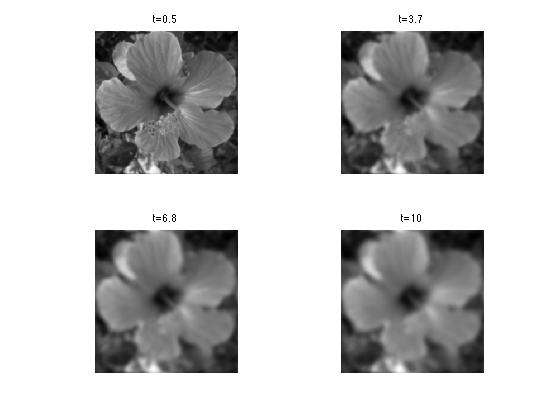

\[
\newcommand{\NN}{\mathbb{N}}
\newcommand{\CC}{\mathbb{C}}
\newcommand{\GG}{\mathbb{G}}
\newcommand{\LL}{\mathbb{L}}
\newcommand{\PP}{\mathbb{P}}
\newcommand{\QQ}{\mathbb{Q}}
\newcommand{\RR}{\mathbb{R}}
\newcommand{\VV}{\mathbb{V}}
\newcommand{\ZZ}{\mathbb{Z}}
\newcommand{\FF}{\mathbb{F}}
\newcommand{\KK}{\mathbb{K}}
\newcommand{\UU}{\mathbb{U}}
\newcommand{\EE}{\mathbb{E}}
\newcommand{\Aa}{\mathcal{A}}
\newcommand{\Bb}{\mathcal{B}}
\newcommand{\Cc}{\mathcal{C}}
\newcommand{\Dd}{\mathcal{D}}
\newcommand{\Ee}{\mathcal{E}}
\newcommand{\Ff}{\mathcal{F}}
\newcommand{\Gg}{\mathcal{G}}
\newcommand{\Hh}{\mathcal{H}}
\newcommand{\Ii}{\mathcal{I}}
\newcommand{\Jj}{\mathcal{J}}
\newcommand{\Kk}{\mathcal{K}}
\newcommand{\Ll}{\mathcal{L}}
\newcommand{\Mm}{\mathcal{M}}
\newcommand{\Nn}{\mathcal{N}}
\newcommand{\Oo}{\mathcal{O}}
\newcommand{\Pp}{\mathcal{P}}
\newcommand{\Qq}{\mathcal{Q}}
\newcommand{\Rr}{\mathcal{R}}
\newcommand{\Ss}{\mathcal{S}}
\newcommand{\Tt}{\mathcal{T}}
\newcommand{\Uu}{\mathcal{U}}
\newcommand{\Vv}{\mathcal{V}}
\newcommand{\Ww}{\mathcal{W}}
\newcommand{\Xx}{\mathcal{X}}
\newcommand{\Yy}{\mathcal{Y}}
\newcommand{\Zz}{\mathcal{Z}}
\newcommand{\al}{\alpha}
\newcommand{\la}{\lambda}
\newcommand{\ga}{\gamma}
\newcommand{\Ga}{\Gamma}
\newcommand{\La}{\Lambda}
\newcommand{\Si}{\Sigma}
\newcommand{\si}{\sigma}
\newcommand{\be}{\beta}
\newcommand{\de}{\delta}
\newcommand{\De}{\Delta}
\renewcommand{\phi}{\varphi}
\renewcommand{\th}{\theta}
\newcommand{\om}{\omega}
\newcommand{\Om}{\Omega}
\renewcommand{\epsilon}{\varepsilon}
\newcommand{\Calpha}{\mathrm{C}^\al}
\newcommand{\Cbeta}{\mathrm{C}^\be}
\newcommand{\Cal}{\text{C}^\al}
\newcommand{\Cdeux}{\text{C}^{2}}
\newcommand{\Cun}{\text{C}^{1}}
\newcommand{\Calt}[1]{\text{C}^{#1}}
\newcommand{\lun}{\ell^1}
\newcommand{\ldeux}{\ell^2}
\newcommand{\linf}{\ell^\infty}
\newcommand{\ldeuxj}{{\ldeux_j}}
\newcommand{\Lun}{\text{\upshape L}^1}
\newcommand{\Ldeux}{\text{\upshape L}^2}
\newcommand{\Lp}{\text{\upshape L}^p}
\newcommand{\Lq}{\text{\upshape L}^q}
\newcommand{\Linf}{\text{\upshape L}^\infty}
\newcommand{\lzero}{\ell^0}
\newcommand{\lp}{\ell^p}
\renewcommand{\d}{\ins{d}}
\newcommand{\Grad}{\text{Grad}}
\newcommand{\grad}{\text{grad}}
\renewcommand{\div}{\text{div}}
\newcommand{\diag}{\text{diag}}
\newcommand{\pd}[2]{ \frac{ \partial #1}{\partial #2} }
\newcommand{\pdd}[2]{ \frac{ \partial^2 #1}{\partial #2^2} }
\newcommand{\dotp}[2]{\langle #1,\,#2\rangle}
\newcommand{\norm}[1]{|\!| #1 |\!|}
\newcommand{\normi}[1]{\norm{#1}_{\infty}}
\newcommand{\normu}[1]{\norm{#1}_{1}}
\newcommand{\normz}[1]{\norm{#1}_{0}}
\newcommand{\abs}[1]{\vert #1 \vert}
\newcommand{\argmin}{\text{argmin}}
\newcommand{\argmax}{\text{argmax}}
\newcommand{\uargmin}[1]{\underset{#1}{\argmin}\;}
\newcommand{\uargmax}[1]{\underset{#1}{\argmax}\;}
\newcommand{\umin}[1]{\underset{#1}{\min}\;}
\newcommand{\umax}[1]{\underset{#1}{\max}\;}
\newcommand{\pa}[1]{\left( #1 \right)}
\newcommand{\choice}[1]{ \left\{ \begin{array}{l} #1 \end{array} \right. }
\newcommand{\enscond}[2]{ \left\{ #1 \;:\; #2 \right\} }
\newcommand{\qandq}{ \quad \text{and} \quad }
\newcommand{\qqandqq}{ \qquad \text{and} \qquad }
\newcommand{\qifq}{ \quad \text{if} \quad }
\newcommand{\qqifqq}{ \qquad \text{if} \qquad }
\newcommand{\qwhereq}{ \quad \text{where} \quad }
\newcommand{\qqwhereqq}{ \qquad \text{where} \qquad }
\newcommand{\qwithq}{ \quad \text{with} \quad }
\newcommand{\qqwithqq}{ \qquad \text{with} \qquad }
\newcommand{\qforq}{ \quad \text{for} \quad }
\newcommand{\qqforqq}{ \qquad \text{for} \qquad }
\newcommand{\qqsinceqq}{ \qquad \text{since} \qquad }
\newcommand{\qsinceq}{ \quad \text{since} \quad }
\newcommand{\qarrq}{\quad\Longrightarrow\quad}
\newcommand{\qqarrqq}{\quad\Longrightarrow\quad}
\newcommand{\qiffq}{\quad\Longleftrightarrow\quad}
\newcommand{\qqiffqq}{\qquad\Longleftrightarrow\qquad}
\newcommand{\qsubjq}{ \quad \text{subject to} \quad }
\newcommand{\qqsubjqq}{ \qquad \text{subject to} \qquad }
\]
Linear Diffusion Flows
This tours studies linear diffusion PDEs, a.k.a. the heat equation. A good reference for diffusion flows in image processing
is [Weickert98].
Contents
Installing toolboxes and setting up the path.
You need to download the following files: signal toolbox and general toolbox.
You need to unzip these toolboxes in your working directory, so that you have toolbox_signal and toolbox_general in your directory.
For Scilab user: you must replace the Matlab comment '%' by its Scilab counterpart '//'.
Recommandation: You should create a text file named for instance numericaltour.sce (in Scilab) or numericaltour.m (in Matlab) to write all the Scilab/Matlab command you want to execute. Then, simply run exec('numericaltour.sce'); (in Scilab) or numericaltour; (in Matlab) to run the commands.
Execute this line only if you are using Matlab.
getd = @(p)path(p,path);
Then you can add the toolboxes to the path.
getd('toolbox_signal/');
getd('toolbox_general/');
Heat Diffusion
The heat equation reads \[ \forall t>0, \quad \pd{f_t}{t} = \nabla f_t \] for a function \(f_t : \RR^2 \rightarrow \RR\) and
where \(f_0\) (the solution at initial time \(t=0\)) is given.
The Laplacian operator reads \[ \Delta f = \pdd{f}{x_1} + \pdd{f}{x_2}. \]
The flow is discretized in space by considering a discrete image of \(N = n \times n\) pixels.
n = 256;
Load an image \(f_0 \in \RR^N\), that will be used to initialize the flow at time \(t=0\).
name = 'hibiscus';
f0 = load_image(name,n);
f0 = rescale( sum(f0,3) );
Display it.
clf;
imageplot(f0);

The flow is discretized in time using an explicit time-stepping \[ f^{(\ell+1)} = f^{(\ell)} + \tau \Delta f^{(\ell)}. \]
We use finite difference Laplacian \[ (\Delta f)_i = \frac{1}{h^2}\pa{ f_{i_1+1,i_2}+f_{i_1-1,i_2}+f_{i_1,i_2+1}+f_{i_1,i_2-1}-4f_j
}\] where we assume periodic boundary conditions, and where \(h = 1/N\) is the spacial step size.
h = 1/n;
delta = @(f)1/h^2 * div(grad(f));
The step size \(\tau\) should satisfy \[ \tau < \frac{h^2}{4} \] for the discretized flow to be stable.
The discrete solution \(f^{(\ell)}\) converges to the continuous solution \(f_t\) at time \(t = \tau \ell\) if both \(\tau
\rightarrow 0\) and \(h \rightarrow 0\) under the condition \(\tau/h^2 < 1/4\).
Select a small enough step size.
tau = .5 * h^2/4;
Final time.
T = 1e-3;
Number of iterations.
niter = ceil(T/tau);
Initialize the diffusion at time \(t=0\).
f = f0;
One step of discrete diffusion.
f = f + tau * delta(f);
Exercice 1: (check the solution) Compute the solution to the heat equation.
exo1;
Explicit Solution using Convolution
The solution to the heat equation can be computed using a convolution \[ \forall t>0, \quad f_t = f_0 \star h_t \] where \(\star\)
denotes the convolution of continuous functions \[ f \star h(x) = \int_{\RR^2} f(y) g(x-y) d y \] and \(h_t\) is a Gaussian
kernel of width \(\sqrt{t}\) \[ h_t(x) = \frac{1}{4 \pi t} e^{ -\frac{\norm{x}^2}{4t} } \]
One can thus approximate the solution using a discrete convolution. Convolutions can be computed in \(O(N\log(N))\) operations
using the FFT, since \[ g = f \star h \qarrq \forall \om, \quad \hat g(\om) = \hat f(\om) \hat h(\om). \]
cconv = @(f,h)real(ifft2(fft2(f).*fft2(h)));
Define a discrete Gaussian blurring kernel of width \(\sqrt{t}\).
t = [0:n/2 -n/2+1:-1];
[X2,X1] = meshgrid(t,t);
normalize = @(h)h/sum(h(:));
h = @(t)normalize( exp( -(X1.^2+X2.^2)/(4*t) ) );
Define blurring operator.
heat = @(f, t)cconv(f,h(t));
Example of blurring.
clf;
imageplot(heat(f0,2));
Exercice 2: (check the solution) Display the heat convolution for increasing values of \(t\).
exo2;

Bibliography